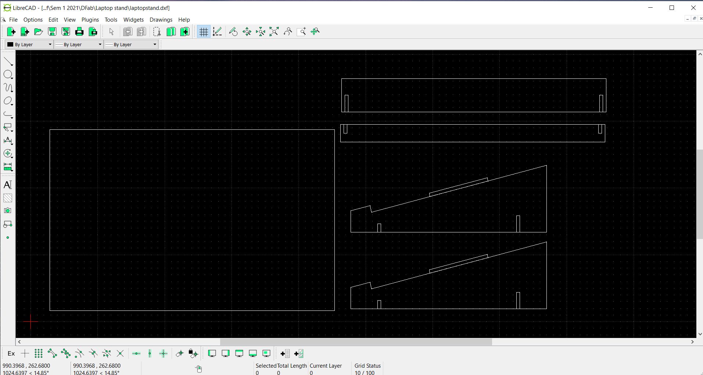
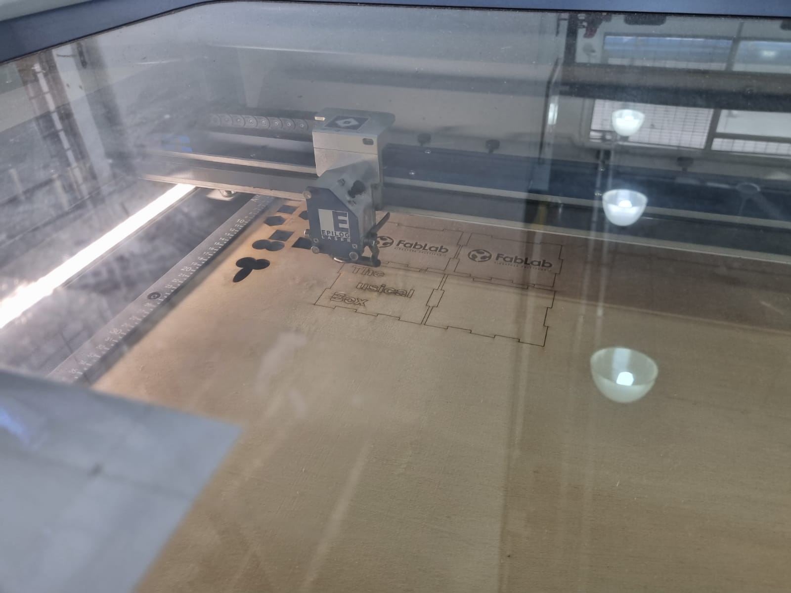

Here in this page i will be talking about the great magic of computer controlled cutting! These cutting operations are obtained by digital data, which is also known as CNC (Computer Numerical Control). These data is provided from CAD operations and digital 2D drawings. The digital data provides accurate and precise cutting operations. They are used in laser cutting & engraving, flatbed cutters & 2D routers and milling machines.
2D profiles provides outlines for cutting operations such as laser cuttings. they are exported in the various file formats such as DXF(Data eXchange Format), PDF(Portable Document Format) and SVG(Scalable Vector Graphics). Below is an example of a DXF file, it showcases the the pieces of a lapstop stand!
The picture showcases that vector software is used to plot out the drawing so that the computer is able to analyse its precise measurements. The software used is called LibreCAD and it exports and imports DXF files. This is extremly easy as i can simply send the file into the laser cutter and it simply cuts out the desired drawing!
Click here to return back to documentations!!